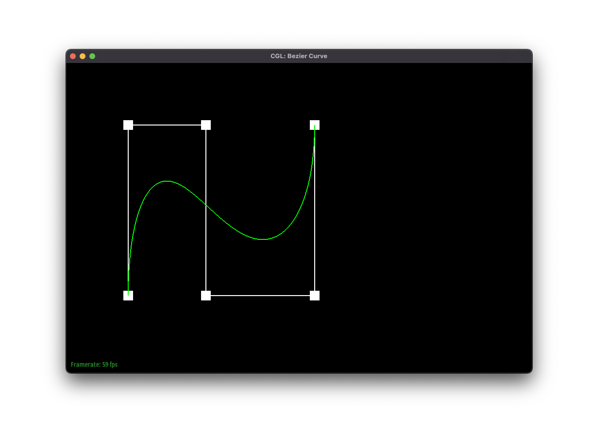
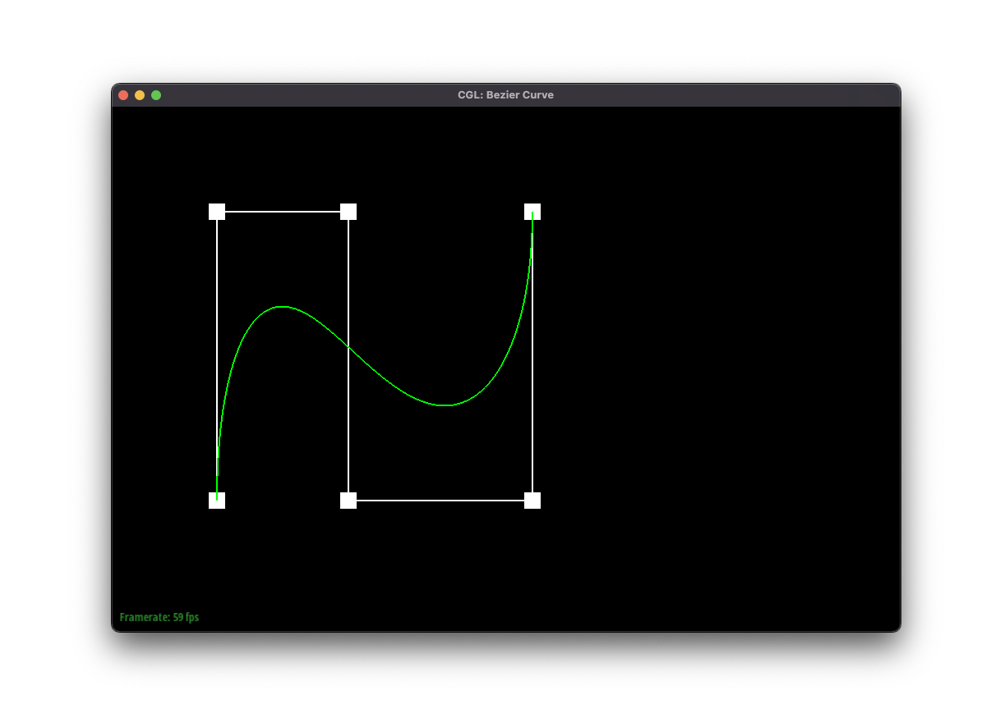
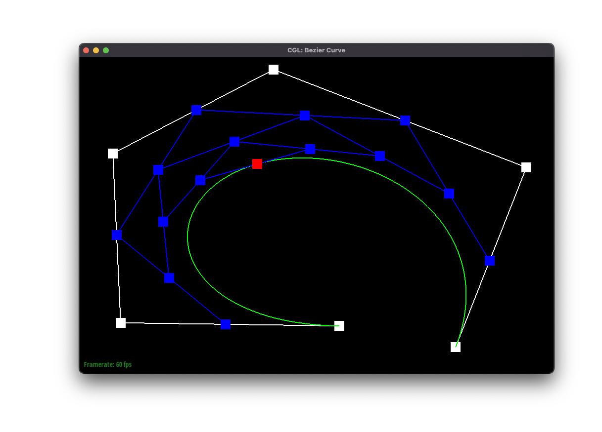

Project 2: MeshEdit
Abdul Ali Khan, Zachary Zollman
Overview
In this assignment, we implemented Bezier curves and surfaces using de Casteljau's algorithm. This algorithm involves recursively dividing a curve's control points into two subsets and calculating intermediate control points along the curve until a final point is reached. We used this algorithm to evaluate Bezier curves and surfaces and provided screenshots to show the intermediate steps.We also implemented area-weighted vertex normals for triangle meshes. The area-weighted vertex normal at a given vertex is the weighted average of the normals of the adjacent faces, where each weight is proportional to the area of the corresponding face that shares the vertex. We provided screenshots to show the difference between shading with and without vertex normals.
Additionally, we implemented edge flip and edge split operations, which we then used to implement loop subdivision for mesh upsampling. The flip operation swaps the diagonal of a quadrilateral formed by two adjacent triangles; rather than connecting the two vertices it initially connected, the diagonal then connects the other two vertices of the quadrilateral. The split operation creates a new vertex, dividing the diagonal edge of a quadrilateral formed by two triangles into two connected edges and adding two new edges connecting the vertices not on the original diagonal to the new point. We combine these in subdivision, which involves adding mesh elements to reduce the coarseness of a mesh. We provided screenshots to show the effect of the edge flip and edge split operations on the mesh, as well as loop subdivision.
Through this assignment, we learned about de Casteljau's algorithm for evaluating Bezier curves and surfaces, as well as the importance of normal vectors for shading in computer graphics. We also learned about local remeshing operations such as edge flip and how they can improve the quality of a mesh.
Section I: Bezier Curves and Surfaces
Part 1: Bezier Curves with 1D de Casteljau Subdivision
De Casteljau's algorithm is a recursive method to evaluate a Bezier curve. It works by dividing the control points into two subsets and calculating intermediate control points along the curve until a final point is reached.The
evaluateStep function uses a version of de Casteljau's algorithm to evaluate a Bezier curve. It takes an input vector of control points and calculates the intermediate points along the curve using the current value of t. The function iterates over each pair of adjacent control points and calculates a new point on the curve using the current value of t. This new point is then inserted in a vector of intermediate points. The function returns this vector of intermediate points, which can be used as a subsequent input to the evaluateStep function. This can be repeated until the output vector contains a single point; this point lies on the Bezier curve.
Note that this process only calculates a single point of the de Casteljau algorithm, so it needs to be repeated with different values of t in order to fully evaluate the curve.
std::vector BezierCurve::evaluateStep(std::vector const &points)
{
std::vector result;
int result_size = points.size() - 1;
for (int i= 0; i < result_size; i++)
{
Vector2D new_point = (1 - t) * points[i] + t * points[i + 1];
result.push_back(new_point);
}
return result;
}


 



Part 2: Bezier Surfaces with Separable 1D de Casteljau
The de Casteljau algorithm can be extended to evaluate Bezier surfaces by first evaluating sets of control points along one axis using the procecure described above (each set with the same parameter) to obtain points on Bezier curves. The resulting set of points can then be used as control points for another Bezier curve along the other axis. The parameter used to evaluate this set can be different. Evaluating this in the same manner yields a point that is on the Bezier surface. This procedure can be repeated with different parameters to obtain more points on the surface.The
evaluateStep function is similar to the 1D Bezier curve case, but is called with a parameter t and a vector of control points for one of the axes of the surface. The evaluate1D function uses a while loop to repeatedly call evaluateStep until only one point remains. This final point represents the evaluation of one Bezier curve along one of the axes.
The
evaluate function first evaluates the set of Bezier curves along one axis (using evaluate1D) to obtain a set of control points for the other axis. It then evaluates this set of control points (again using evaluate1D) to obtain a point on the Bezier surface. This function can be called with different values of the parameters u and v to obtain different points on the surface.
std::vector BezierPatch::evaluateStep(std::vector const &points, double t) const
{
std::vector result;
int result_size = points.size() - 1;
for (int i = 0; i < result_size; i++)
{
Vector3D new_point = (1 - t) * points[i] + t * points[i + 1];
result.push_back(new_point);
}
return result;
}
Vector3D BezierPatch::evaluate1D(std::vector const &points, double t) const
{
std::vector new_points = points;
while (new_points.size() > 1)
{
new_points = evaluateStep(new_points, t);
}
return new_points[0];
}
Vector3D BezierPatch::evaluate(double u, double v) const
{
std::vector other_axis;
other_axis.reserve(controlPoints.size());
for (const auto &controlPoint : controlPoints)
{
other_axis.push_back(evaluate1D(controlPoint, u));
}
return evaluate1D(other_axis, v);
}
Section II: Triangle Meshes and Half-Edge Data Structure
Part 3: Area-Weighted Vertex Normals
The area-weighted vertex normal at a given vertex is a vector that is the weighted average of the normals of the adjacent faces, where each weight is proportional to the area of the corresponding face that shares the vertex.The
normal function calculates the area-weighted vertex normal for a given vertex. We first initialize the result vector and the total area to zero. We then iterate over the half-edges that are adjacent to the vertex.
For each half-edge, we calculate the cross product of the vectors formed by the positions of the adjacent vertices of the current half-edge and the next two half-edges, which gives the normal of the corresponding triangle. We add this cross product to the result vector and add half of the norm of the cross product to the total area. This makes sense because the area of a triangle is proportional to the norm of its cross product.
After iterating through the edges, the function returns the normalized result vector divided by the total area, which gives the area-weighted vertex normal.
Vector3D Vertex::normal(void) const
{
HalfedgeCIter edge = halfedge();
Vector3D result = Vector3D();
double area = 0;
do
{
Vector3D p1 = edge->vertex()->position;
Vector3D p2 = edge->next()->vertex()->position;
Vector3D p3 = edge->next()->next()->vertex()->position;
Vector3D n1 = cross(p2 - p1, p3 - p1);
result += n1;
area += n1.norm() / 2;
edge = edge->twin()->next();
} while (edge != halfedge());
return result / area;
}


Part 4: Edge Flip
The edge flip operation swaps the diagonal edge of two adjacent triangles to form two new triangles. To implement this operation, we first check if either of the two faces is a boundary face. If so, it returns an invalid iterator since the edge flip operation is not defined for boundary edges.Otherwise, the code follows a series of steps to update the vertex and halfedge connectivity of the mesh to reflect the edge flip. It updates the vertex and halfedge pointers of the four vertices involved (A, B, C, D) and the six halfedges around the flipped edge (AtoB, BtoC, CtoA, CtoB, BtoD, DtoC). It also updates the edge pointers of the five edges involved (AB, AC, BCtoAD, CD, BD), as well as the face pointers of the two new triangles formed by the flip.
One interesting trick is to use assertions or unit tests to check that the mesh connectivity remains valid after the operation. This can help catch errors that might not be immediately obvious from visual inspection of the mesh.
EdgeIter HalfedgeMesh::flipEdge(EdgeIter e0)
{
if (e0->halfedge()->face()->isBoundary() || e0->halfedge()->twin()->face()->isBoundary()) {
return EdgeIter();
}
HalfedgeIter BtoC = e0->halfedge();
HalfedgeIter CtoA = BtoC->next();
HalfedgeIter AtoB = CtoA->next();
HalfedgeIter CtoB = BtoC->twin();
HalfedgeIter BtoD = CtoB->next();
HalfedgeIter DtoC = BtoD->next();
VertexIter A = AtoB->vertex();
VertexIter B = BtoC->vertex();
VertexIter C = CtoB->vertex();
VertexIter D = DtoC->vertex();
EdgeIter AB = AtoB->edge();
EdgeIter AC = CtoA->edge();
EdgeIter BCtoAD = BtoC->edge();
EdgeIter CD = DtoC->edge();
EdgeIter BD = BtoD->edge();
FaceIter leftToUpper = CtoA->face();
FaceIter rightToLower = BtoD->face();
CtoA->next() = BtoC;
CtoA->vertex() = C;
CtoA->edge() = AC;
CtoA->face() = leftToUpper;
BtoD->next() = CtoB;
BtoD->vertex() = B;
BtoD->edge() = BD;
BtoD->face() = rightToLower;
AtoB->next() = BtoD;
AtoB->vertex() = A;
AtoB->edge() = AB;
AtoB->face() = rightToLower;
DtoC->next() = CtoA;
DtoC->vertex() = D;
DtoC->edge() = CD;
DtoC->face() = leftToUpper;
BtoC->next() = DtoC;
BtoC->vertex() = A;
BtoC->edge() = BCtoAD;
BtoC->face() = leftToUpper;
CtoB->next() = AtoB;
CtoB->vertex() = D;
CtoB->edge() = BCtoAD;
CtoB->face() = rightToLower;
A->halfedge() = AtoB;
B->halfedge() = BtoD;
C->halfedge() = CtoA;
D->halfedge() = DtoC;
AB->halfedge() = AtoB;
BD->halfedge() = BtoD;
CD->halfedge() = DtoC;
AC->halfedge() = CtoA;
BCtoAD->halfedge() = CtoB;
rightToLower->halfedge() = BtoD;
leftToUpper->halfedge() = CtoA;
return BCtoAD;
}

Part 5: Edge Split
The splitEdge function performs the split of an edge by creating a new vertex M in the middle of the edge and updating the connectivity information of the mesh accordingly. This function effectively splits the edge into two edges by adding a new vertex in the middle, and creates four new faces and five new edges to maintain the manifoldness of the mesh.First, we check if either of the faces incident on the edge e0 is a boundary face. If so, we return a null VertexIter.We then obtain the halfedges and edges that are involved in the split, as well as the vertices, faces, and edges that we will create.We set the position of the new vertex M as the midpoint between the original vertices B and C. We update the halfedge connectivity information for each halfedge that is affected by the split.
We create new halfedges AtoM, MtoA, BtoM, MtoB, DtoM, and MtoD and update their twins, next pointers, vertices, edges, and faces accordingly. Finally, we update the connectivity information of the edges, vertices, and faces that are affected by the split.
VertexIter HalfedgeMesh::splitEdge(EdgeIter e0)
{
if (e0->halfedge()->face()->isBoundary() || e0->halfedge()->twin()->face()->isBoundary()) {
return VertexIter();
}
HalfedgeIter BtoC_MtoC = e0->halfedge();
HalfedgeIter CtoA = BtoC_MtoC->next();
HalfedgeIter AtoB = CtoA->next();
HalfedgeIter CtoB_CtoM = BtoC_MtoC->twin();
HalfedgeIter BtoD = CtoB_CtoM->next();
HalfedgeIter DtoC = BtoD->next();
EdgeIter AB = AtoB->edge();
EdgeIter AC = CtoA->edge();
EdgeIter BCtoCM = BtoC_MtoC->edge();
EdgeIter CD = DtoC->edge();
EdgeIter BD = BtoD->edge();
FaceIter leftToUpperLeft = CtoA->face();
FaceIter rightToUpperRight = BtoD->face();
VertexIter A = AtoB->vertex();
VertexIter B = BtoC_MtoC->vertex();
VertexIter C = CtoB_CtoM->vertex();
VertexIter D = DtoC->vertex();
VertexIter M = newVertex();
FaceIter lowerLeft = newFace();
FaceIter lowerRight = newFace();
EdgeIter AM = newEdge();
EdgeIter BM = newEdge();
EdgeIter DM = newEdge();
HalfedgeIter AtoM = newHalfedge();
HalfedgeIter MtoA = newHalfedge();
HalfedgeIter BtoM = newHalfedge();
HalfedgeIter MtoB = newHalfedge();
HalfedgeIter DtoM = newHalfedge();
HalfedgeIter MtoD = newHalfedge();
M->position = B->position + (C->position - B->position) * 1/2;
M->halfedge() = BtoC_MtoC;
C->halfedge() = CtoA;
D->halfedge() = DtoC;
B->halfedge() = BtoD;
A->halfedge() = AtoB;
lowerLeft->halfedge() = MtoA;
lowerRight->halfedge() = MtoB;
leftToUpperLeft->halfedge() = CtoA;
rightToUpperRight->halfedge() = CtoB_CtoM;
AM->halfedge() = AtoM;
BM->halfedge() = BtoM;
DM->halfedge() = DtoM;
AB->halfedge() = AtoB;
BD->halfedge() = BtoD;
CD->halfedge() = DtoC;
AC->halfedge() = CtoA;
BCtoCM->halfedge() = BtoC_MtoC;
AtoM->twin() = MtoA;
AtoM->next() = BtoC_MtoC;
AtoM->vertex() = A;
AtoM->edge() = AM;
AtoM->face() = leftToUpperLeft;
BtoC_MtoC->twin() = CtoB_CtoM;
BtoC_MtoC->next() = CtoA;
BtoC_MtoC->vertex() = M;
BtoC_MtoC->edge() = BCtoCM;
BtoC_MtoC->face() = leftToUpperLeft;
CtoA->next() = AtoM;
CtoA->vertex() = C;
CtoA->edge() = AC;
CtoA->face() = leftToUpperLeft;
MtoA->twin() = AtoM;
MtoA->next() = AtoB;
MtoA->vertex() = M;
MtoA->edge() = AM;
MtoA->face() = lowerLeft;
AtoB->next() = BtoM;
AtoB->vertex() = A;
AtoB->edge() = AB;
AtoB->face() = lowerLeft;
BtoM->twin() = MtoB;
BtoM->next() = MtoA;
BtoM->vertex() = B;
BtoM->edge() = BM;
BtoM->face() = lowerLeft;
MtoB->twin() = BtoM;
MtoB->next() = BtoD;
MtoB->vertex() = M;
MtoB->edge() = BM;
MtoB->face() = lowerRight;
BtoD->next() = DtoM;
BtoD->vertex() = B;
BtoD->edge() = BD;
BtoD->face() = lowerRight;
DtoM->twin() = MtoD;
DtoM->next() = MtoB;
DtoM->vertex() = D;
DtoM->edge() = DM;
DtoM->face() = lowerRight;
MtoD->twin() = DtoM;
MtoD->next() = DtoC;
MtoD->vertex() = M;
MtoD->edge() = DM;
MtoD->face() = rightToUpperRight;
DtoC->next() = CtoB_CtoM;
DtoC->vertex() = D;
DtoC->edge() = CD;
DtoC->face() = rightToUpperRight;
CtoB_CtoM->next() = MtoD;
CtoB_CtoM->vertex() = C;
CtoB_CtoM->edge() = BCtoCM;
CtoB_CtoM->face() = rightToUpperRight;
return M;
}


Part 6: Loop Subdivision for Mesh Upsampling
Essentially, in order to implement loop subdivision, I calculated new vertex positions, split original mesh edges, flipped new edges that were connected to old vertices, and updated vertex positions.
To go into more detail, I performed these steps in loops for elements that were not on boundaries (as determined by the isBoundary function). I started by calculating new positions for existing vertices using the formula provided in the assignment instructions. This involved determining the degree of the vertex (which was straightforward since a function for doing so was provided), the appropriate value for the variable u (which depended on the degree of the vertex), and the sum of the positions of the vertex’s neighbors (which involved iterating through the neighbors and summing the values of their position fields). Next, I calculated new positions for new vertices using the other provided formula. To do so, I found the vertices of the two triangles sharing the edge where the new vertex would go and calculated a weighted sum according to the formula. Next, I split each edge in the mesh that connected old vertices. Each call to the edge-splitting function returned the newly-created vertex (in the form of a VertexIter), which allowed me to mark the vertex as new and update its position in this loop of the function. In the next loop, I went through all of the edges and flipped the new edges that connected an old vertex and a new vertex. In the final loop, I transferred the position values for the original vertices from the temporary placeholder field to the actual position field.
In terms of debugging, I noticed that my initial implementation of subdivision resulted in the mesh disappearing. This confused me at first, but then I hypothesized that the new positions I was assigning might be faulty. I stepped through with the debugger, and indeed, I was assigning new points the position (0,0,0) due to a floating point division error. After resolving this, I observed that the subdivided mesh included black triangles. I was unsure of the cause of this. Eventually, I considered that it might be due to the edge flipping part of the subdivision process. I tried commenting this part out and observed that the black triangles disappeared. I looked closer at the edge flipping logic and realized that I was flipping more edges than necessary; I wasn’t excluding edges that had initially been part of the mesh correctly. Once I fixed this, I observed on the beetle file that boundary edges extended in an unexpected manner when I subdivided the edges. I then wrapped the insides of the loops in checks for whether the features were edges, and this solved the problem.
Unsurprisingly, subdivided meshes have noticeably more faces and edges. Also, the sharp edges are smoothed out by subdivision.
Interestingly, subdivision does result in an asymmetric form for the cube. However, if I split the diagonal edge on each face before subdividing, then the resulting form is symmetrical.
This makes sense because the updated position that we calculate for an existing vertex is dependent upon the vertex’s neighbors. With the default edges, for some vertices of the cube, the distribution of neighboring vertices is far from symmetric. For example, for the vertex at the center of the below image, the vertex has a neighbor at each corner of each connected face, except for the lower right face (where it is missing the vertex that it would connect to diagonally).
In contrast, when I split the edges, the distribution of neighboring vertices becomes symmetric. Thus, the new positions that we calculate will be similarly more symmetric.